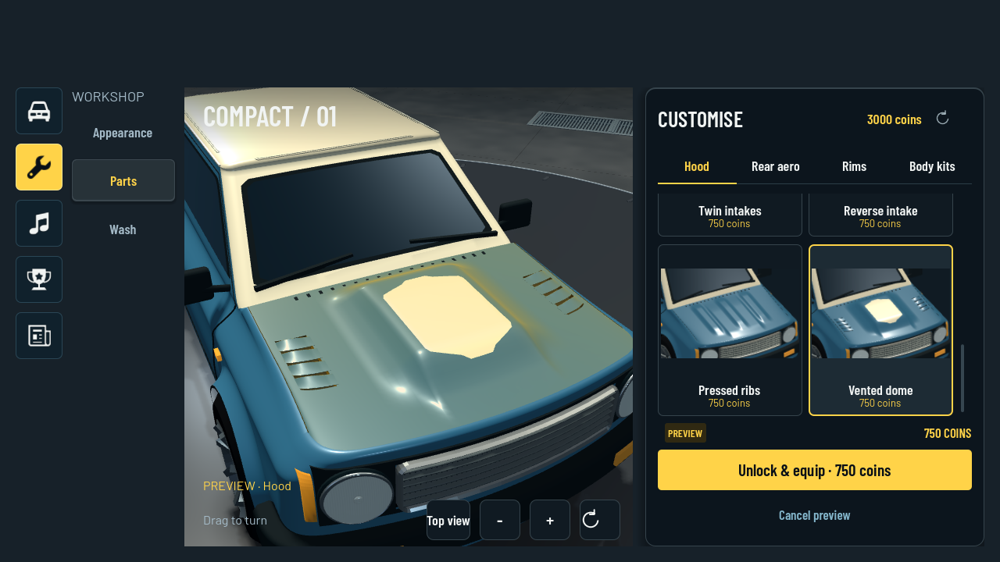
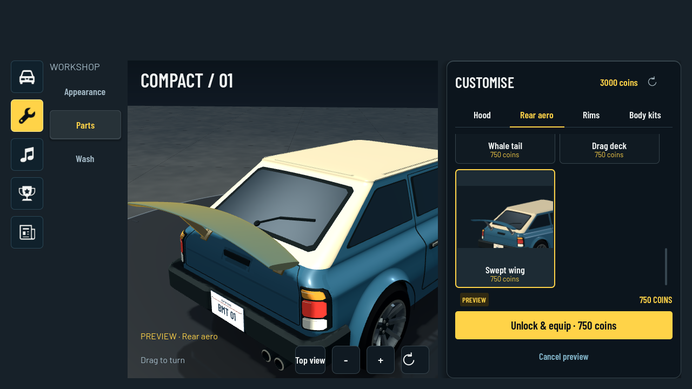
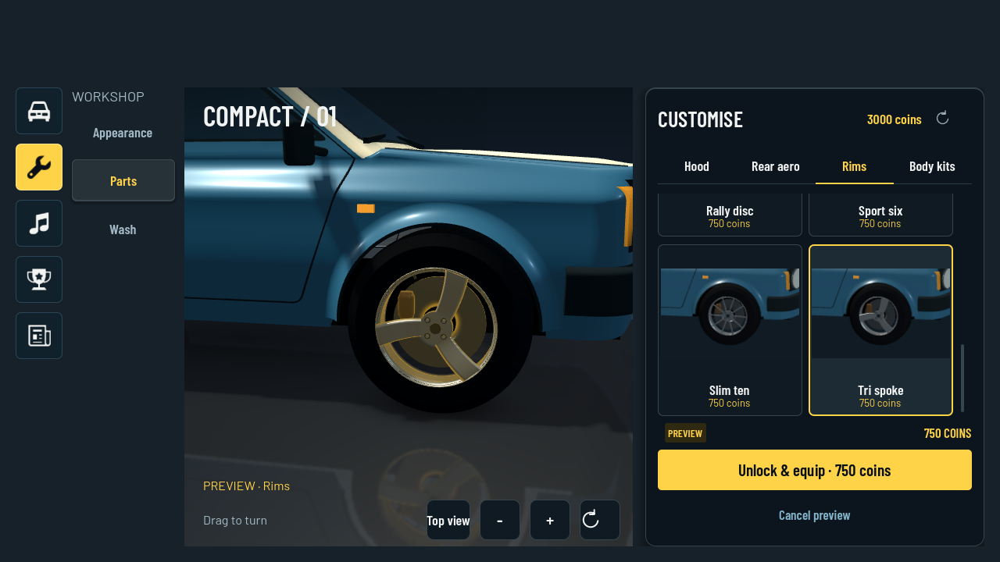
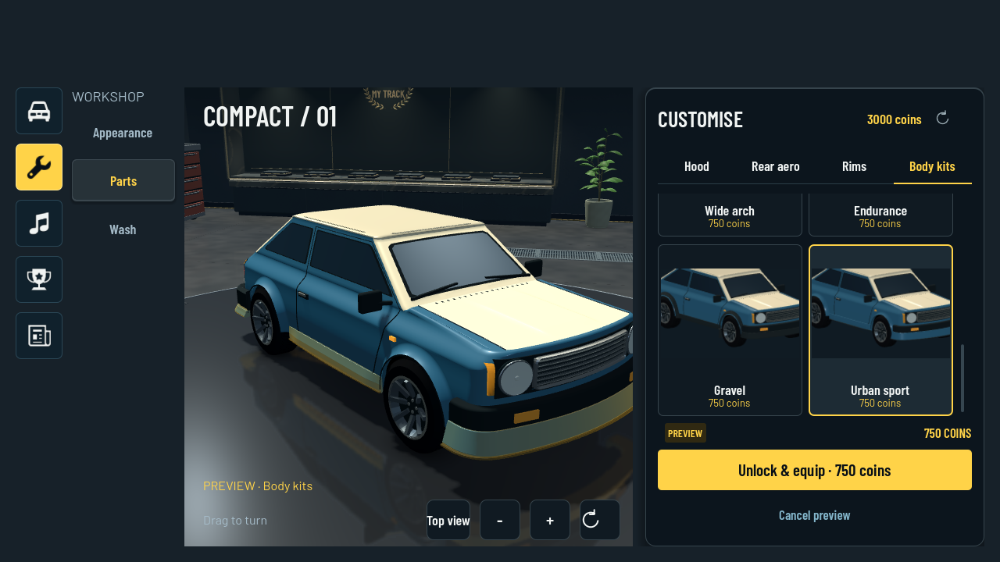
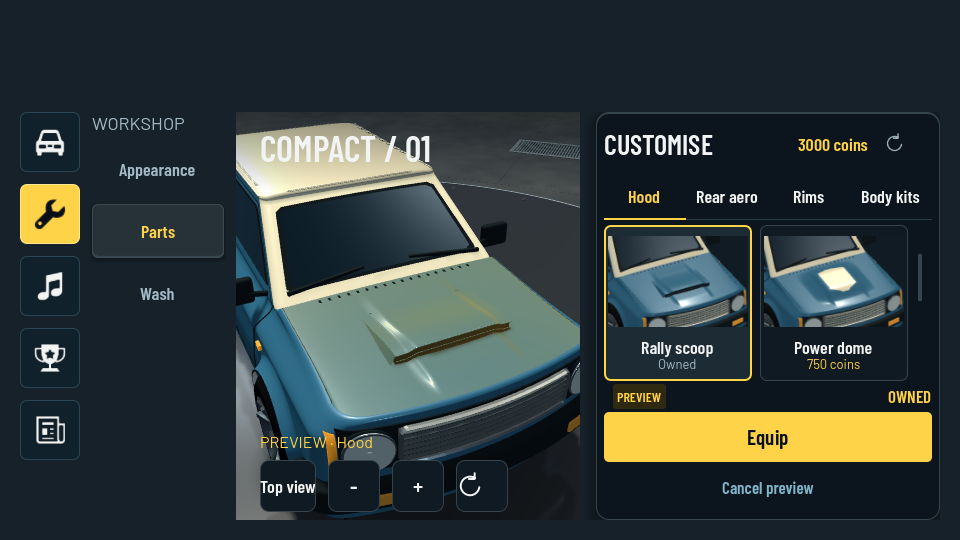
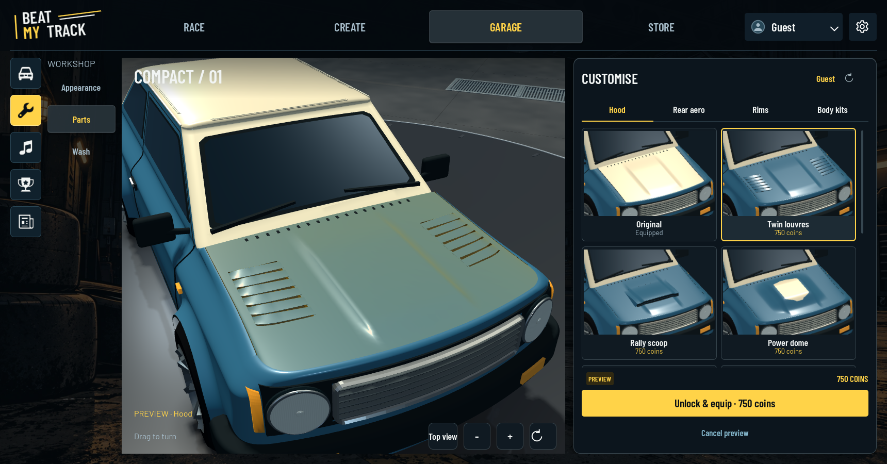

Native Godot views. Larger part cards fill the Customise panel; the actual Garage car shows the selected change. Selecting a part/category moves the camera, and drag/zoom continue to inspect the same region.






No physical-device test or device attachment check was performed. Client reload and owner appearance/touch/cost acceptance remain.